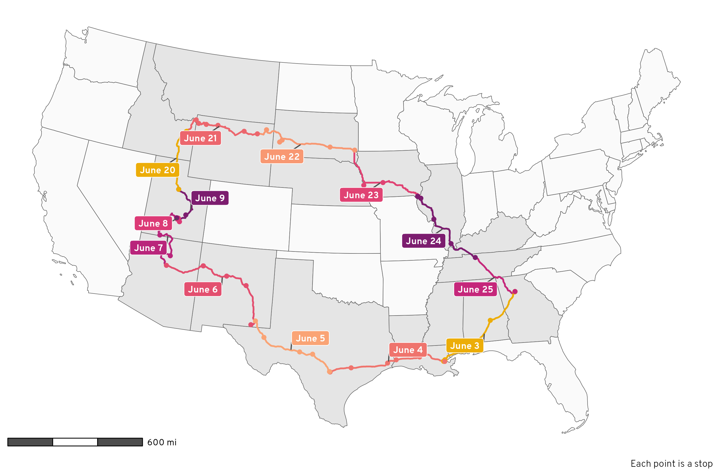
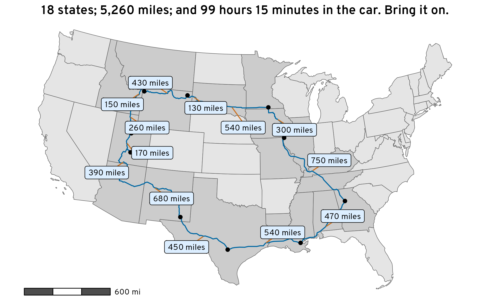
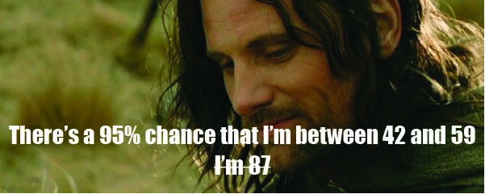
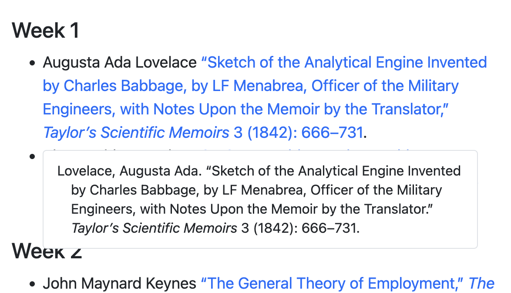

This is like basic stats stuff, but I can never remember how to do it—here’s how to use matrix multiplication to replicate the results of predict()
predict()
Learn how to use R, {brms}, {marginaleffects}, and {tidybayes} to analyze discrete choice conjoint data with fully specified hierarchical multilevel multinomial models
Fix overplotted points on maps by creating bins or filled desntiy gradients using R, {ggplot2}, and {sf}
Learn how to use R, {brms}, and {marginaleffects} to analyze conjoint data and find causal and descriptive quantities of interest, both frequentistly and Bayesianly

Learn how to use R to load and clean and play with all the location history data Google keeps about you and look at some neat plots and tables about our 5,000-mile summer road trip along the way

Use R to get geocoded location and routing data from OpenStreetMap and explore our family’s impending 5,000 mile road trip around the USA
Use R, Stan, and {brms} to calculate differences between categorical proportions in a principled Bayesian way
Explore Tolkien’s Middle Earth with R-based GIS tools, including {ggplot2} and {sf}

Use statistical simulation and a hidden table of Númenórean ages from Tolkien’s unpublished works to convert Aragorn’s Dúnedan years to actual human years

By default, pandoc doesn’t include full bibliographic references inline in documents, but with one tweak to a CSL file, you can create syllabus-like lists of citations with full references
Tips, tricks, and rationale for converting from a single big BibTeX file to a Zotero database